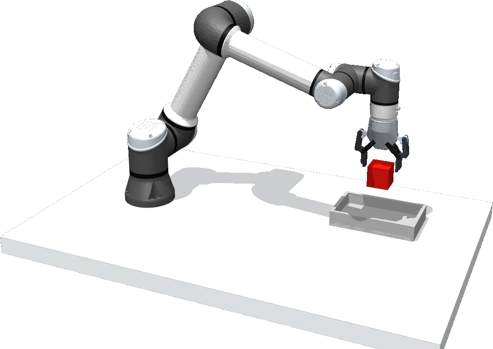
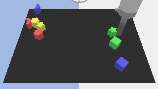
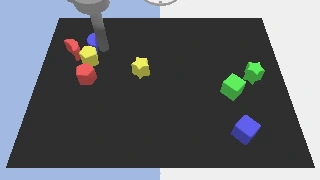

Jev-Inspired Energy-Based Adaptation
for Vision-Language-Action Policies
One energy.
Two ways to act.
A lightweight preference model that selects better proposals and guides continuous robot actions.

A small model.
A different decision.
A pretrained policy already knows a great deal about acting. JevVLA learns which of its actions to prefer—and how to adjust them—while keeping the base policy frozen.
Inspired by Jev. Built for robot action.
Jev's structured, probabilistic decision interface motivates a simple idea: learn preferences over possible actions. JevVLA expresses those preferences as a differentiable scalar energy, conditioned on the observation, task context, and action.
Its values support candidate selection. Its gradients support continuous guidance. Pick-and-place decisions and action chunks share the same core architecture, with separately trained weights for each benchmark.
One field.
Two interfaces.
A shared preference function connects discrete decisions and continuous motion.
Compare the possibilities.
Combine learned energy with the policy's proposal probabilities. Select a preferred candidate, then execute it.
p(a | c) ∝ p₀(a | c) exp(−βE(c, a))
Refine the movement.
Differentiate the same energy with respect to the action. Apply bounded corrections to an action or guide a chunk during generation.
a′ = a − η ∇aE(c, a)
See the decision.
Move around it.
Follow a grasp from proposal to placement. Switch between candidate selection and continuous guidance, rotate the scene, or scrub through the movement.
Preparing the 3D scene…
The frozen policy proposes several actions. The energy model chooses one, and the robot carries out the selected grasp and placement.
3D method illustrationOrbit · Play · Scrub
The decision core,
made compact.
A context-conditioned quadratic energy captures structured action preferences. An MLP residual adds flexibility. Both selection and guidance use this same scalar output.
Execution outcomes, expert corrections, and demonstration-derived preferences provide supervision for the shared decision core.
View the modelSame starting point.
A different outcome.
Three selected episodes show how action preferences change execution. Step through paired frames from Direct and JevVLA.
“put the blue moon towards the red moon”
LanguageTable · seed 900003

The same initial state leads to different outcomes after small action corrections. JevVLA completes the task at step 41; Direct reaches the 200-step limit.
Continuous guidanceUtility relative to Direct · higher is preferred
Small core.
Consistent gains.
One architecture improves task success across five benchmarks, covering pick-and-place manipulation and continuous control.
MetaWorld MT50
π₀.₅–MT50
VIMA L1
VIMA-200M
LanguageTable
Language BC
LIBERO Plus
π₀.₅–LIBERO
CLIPort
CLIPort
Each benchmark uses its corresponding frozen base policy and independently trained JevVLA weights. CLIPort reports strict task success.
From preference
to action.
Feedback shapes the energy. The learned field then improves action choice through its values and action refinement through its gradients.
A shared core.
Your next policy.
Explore the energy model, train an adapter, and connect it to your robot policy.
Explore the repositorygit clone https://github.com/ZJU4EmbodiedAI/JevVLA.git
cd JevVLA
pip install .